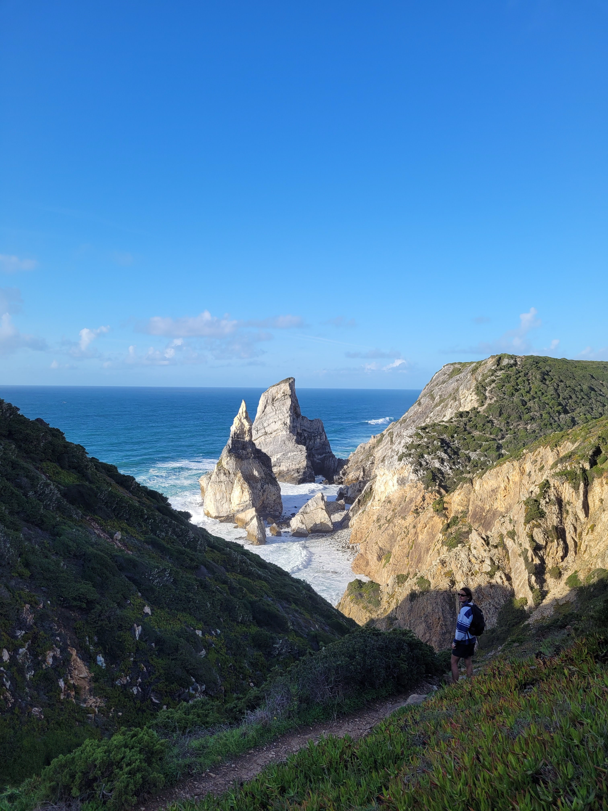
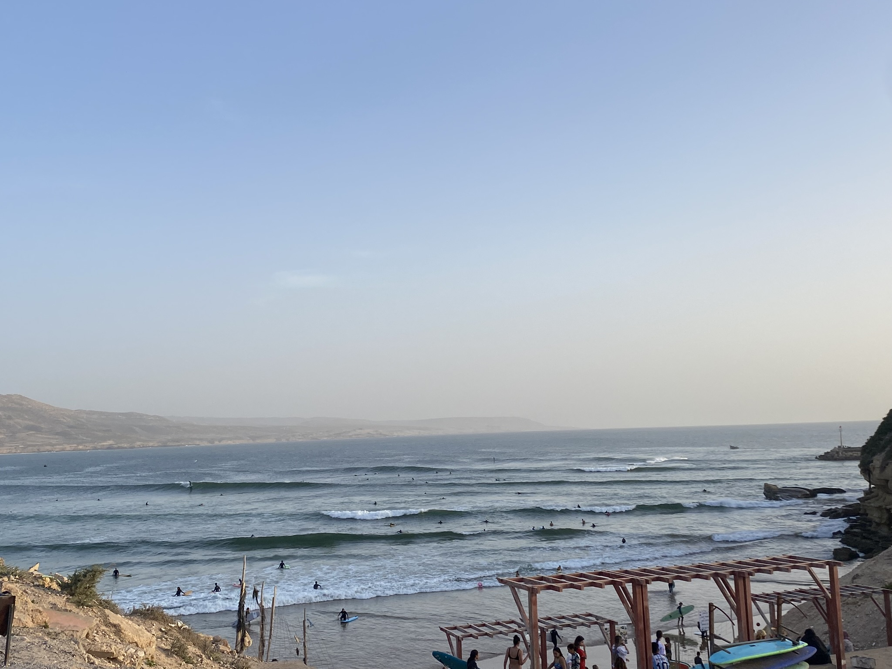

De surfers die (bijna) geen golf braken
Daar lopen ze dan. Billabong-shirts en Dickies-broeken aan, zonnebril op het voorhoofd, halflange haren licht wapperend in de wind. Langzame…
20/10/2024
Daar lopen ze dan. Billabong-shirts en Dickies-broeken aan, zonnebril op het voorhoofd, halflange haren licht wapperend in de wind. Langzame…
20/10/2024
Ik loop de atlantisce oceaan uit. Het eenvinnige Torq-board hangt losjes in mijn rechterhand terwijl ik met moeite mijn voeten stap voor sta…
18/04/2024